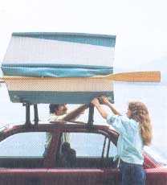

Facing page: In its fully folded position, the 65 pound craft is a weatherproof cartop carrier; the cars double as handles. On the ground it can be used as temporary storage and accommodates about 30 cubicfeet of equipment. Above: the boat, locked open to its eight-foot length.